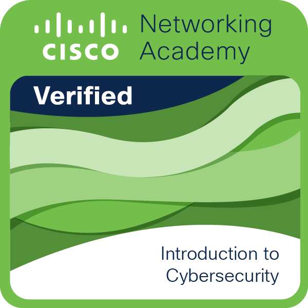
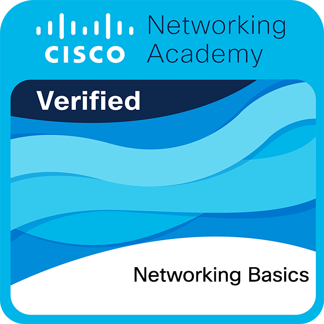

Seguridad en Sistemas Operativos Windows Server y Linux
El alumno superó los módulos y el proyecto final para aprobar el curso de "Seguridad en sistemas operativos Windows Server y Linux" aprendiendo las habilidades requeridas para proteger y administrar los sistemas que usan las organizaciones, asegurando que funcionen de manera segura y sin interrupciones. Los profesionales en este campo pueden trabajar como administradores de sistemas, administradores de plataformas o especialistas en seguridad, siendo responsables de proteger la infraestructura crítica de la empresa
link de verificación.png)
Certificado de Ciberseguridad de Google
Las personas que reciben el Certificado de Ciberseguridad de Google han completado ocho cursos creados por Google que incluyen evaluaciones y ejercicios y las preparan para roles de nivel inicial en ciberseguridad. Quienes se gradúan tienen un nivel principiante en Python, Linux, SQL, Gestión de la Información y Eventos de Seguridad (SIEM) y Sistemas de Detección de Intrusiones (IDS), saben cómo detectar riesgos, amenazas y vulnerabilidades comunes y administran técnicas para mitigarlos.
link de verificación
Introduction to Cybersecurity
Cisco verifies the earner of this badge successfully completed the Introduction to Cybersecurity course. The holder of this student-level credential has introductory knowledge of cybersecurity, including the global implications of cyber threats on industries, and why cybersecurity is a growing profession. They understand vulnerabilities and threat detection and defense. They also have insight into opportunities available with pursuing cybersecurity certifications
link de verificación
networking-basics
Cisco verifies the earner of this badge successfully completed the Networking Basics course and achieved this student level credential. Earner has knowledge of the types of networks, how they work, how devices send and receive data, the types of network cabling, how IP addresses find information on the Internet, how transport and applications operate, and has practiced building a home wireless network. Participated in up to 13 Cisco Packet Tracer activities.
link de verificación